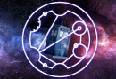
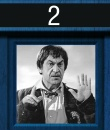
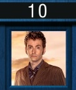
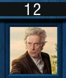
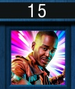
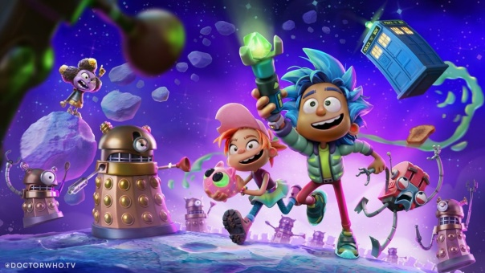
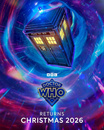

Таблица коллекции |  Навигация по канону |  Связные экранизации |
СПИСОК ДОКТОРОВКлассика (Олдскул) с 1963 по 1989 (+ фильм 1996):
и серий сериалов с ними связанных
==полная хронология канона со спин-офф сериалами и ссылками на просмотр==




Новая эра (Ньюскул) с 2005 по 2022:





Перезапуск (Whoniverse) с 2023:


----
СПИН-ОФФ СЕРИАЛЫ
список со ссылками на страницу просмотра
🤖 К9 и компания (1981)
👽 Торчвуд (2006-2011)
1 сезон (2006-2007) | Список серий | >ПЛЕЙЛИСТ< | Эра 10 Доктора
2 сезон (2008) | Список серий | >ПЛЕЙЛИСТ< | Эра 10 Доктора
3 сезон (2009) Дети Земли | Список серий | >ПЛЕЙЛИСТ< | Эра 10 Доктора
4 сезон (2011) День Чуда | Список серий | >ПЛЕЙЛИСТ< | Эра 11 Доктора
2 сезон (2008) | Список серий | >ПЛЕЙЛИСТ< | Эра 10 Доктора
3 сезон (2009) Дети Земли | Список серий | >ПЛЕЙЛИСТ< | Эра 10 Доктора
4 сезон (2011) День Чуда | Список серий | >ПЛЕЙЛИСТ< | Эра 11 Доктора
👩🦰 Приключения Сары Джейн (2007-2011)
1 сезон (2007) | Список серий | >ПЛЕЙЛИСТ< | Эра 10 Доктора
2 сезон (2008) | Список серий | >ПЛЕЙЛИСТ< | Эра 10 Доктора
3 сезон (2009) | Список серий | >ПЛЕЙЛИСТ< | Эра 10 Доктора
4 сезон (2010) | Список серий | >ПЛЕЙЛИСТ< | Эра 11 Доктора
5 сезон (2011) | Список серий | >ПЛЕЙЛИСТ< | Эра 11 Доктора
2 сезон (2008) | Список серий | >ПЛЕЙЛИСТ< | Эра 10 Доктора
3 сезон (2009) | Список серий | >ПЛЕЙЛИСТ< | Эра 10 Доктора
4 сезон (2010) | Список серий | >ПЛЕЙЛИСТ< | Эра 11 Доктора
5 сезон (2011) | Список серий | >ПЛЕЙЛИСТ< | Эра 11 Доктора
🏫 Класс (2016)
🕰 Истории ТАРДИС (2023-2024)
🌊 Война между Сушей и Морем (2025)
ОЖИДАЕМЫЕ СЕЗОНЫ
а так же спецвыпуски и спин-офф сериалы
👶Анимационный сериал для дошкольного возраста (конец 2027 — начало 2028)


BBC анонсировала анимационный спин‑офф «Доктор Кто: Экипаж ТАРДИС» (Doctor Who: TARDIS Crew) — проект для дошкольной аудитории на CBeebies и BBC iPlayer.
Производство ведёт Blue Zoo Animation Studio, режиссёр — Доминик Миннс. Сериал включает 52 эпизода по 11 минут; релиз запланирован на конец 2027 — начало 2028 года.
Сюжет сосредоточен на молодом Повелителе Времени и его спутниках — Ханне, Бисти и Тост‑ИЕ; в приключениях команда сталкивается с классическими противниками, включая Далеков.
Проект позиционируется как самостоятельное ответвление, сохраняющее дух франшизы, но адаптированное для юных зрителей.
🎁Рождественский спецвыпуск (отменён) - не ждём


Ранее Би-би-си объявляла о рождественском спецвыпуске, который должен был выйти в 2026 году. Но производство отменили.
В ПОИСКЕ/ОЖИДАНИИ ОЗВУЧЕК:
- 5-я серия 21-го сезона Доктора Кто (Классика): "Планета огня" (Planet of Fire) - все 4 эпизода
+ Специальная версия (омнибус)
- 4-я серия 25-го сезона Доктора Кто (Классика): Величайшее шоу в галактике (The Greatest Show in the Galaxy) - все 4 эпизода
- 1-я серия 26-го сезона Доктора Кто (Классика): Поле боя (Battlefield) - все 4 эпизода
- 2-я серия 26-го сезона Доктора Кто (Классика): Призрачный свет (Ghost Light) - все 3 эпизода
- 4-я серия 26-го сезона Доктора Кто (Классика): Выживание (Survival) - все 3 эпизода
- Мини-эпизод: Доктор Кто: Сказка на ночь
- Мини-эпизод: Плохая музыка